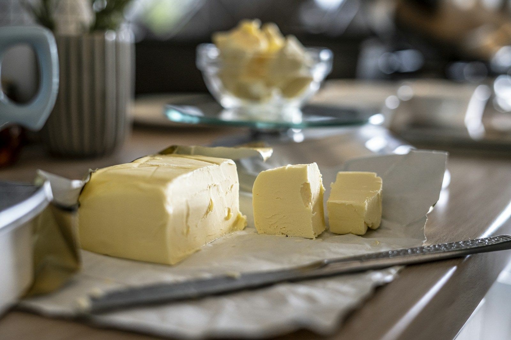
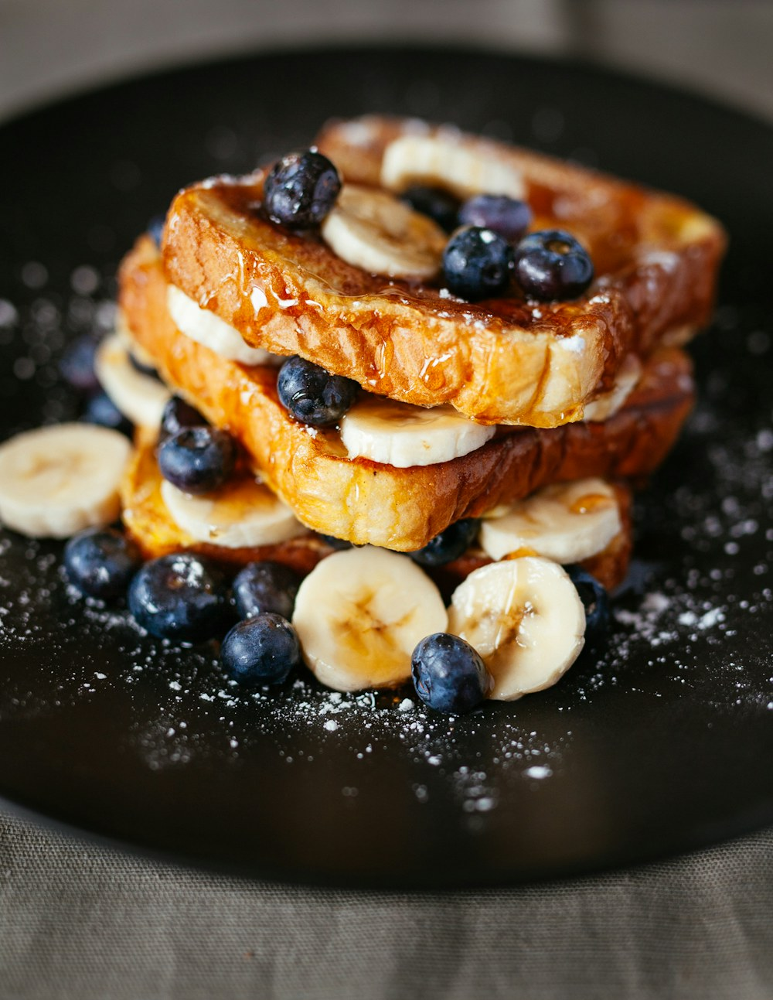
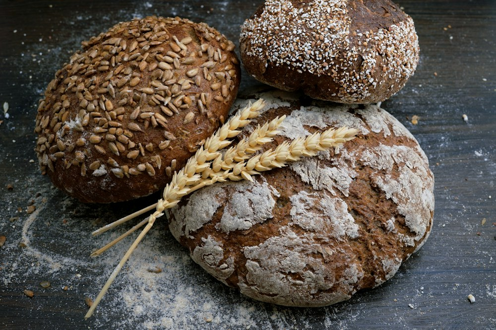
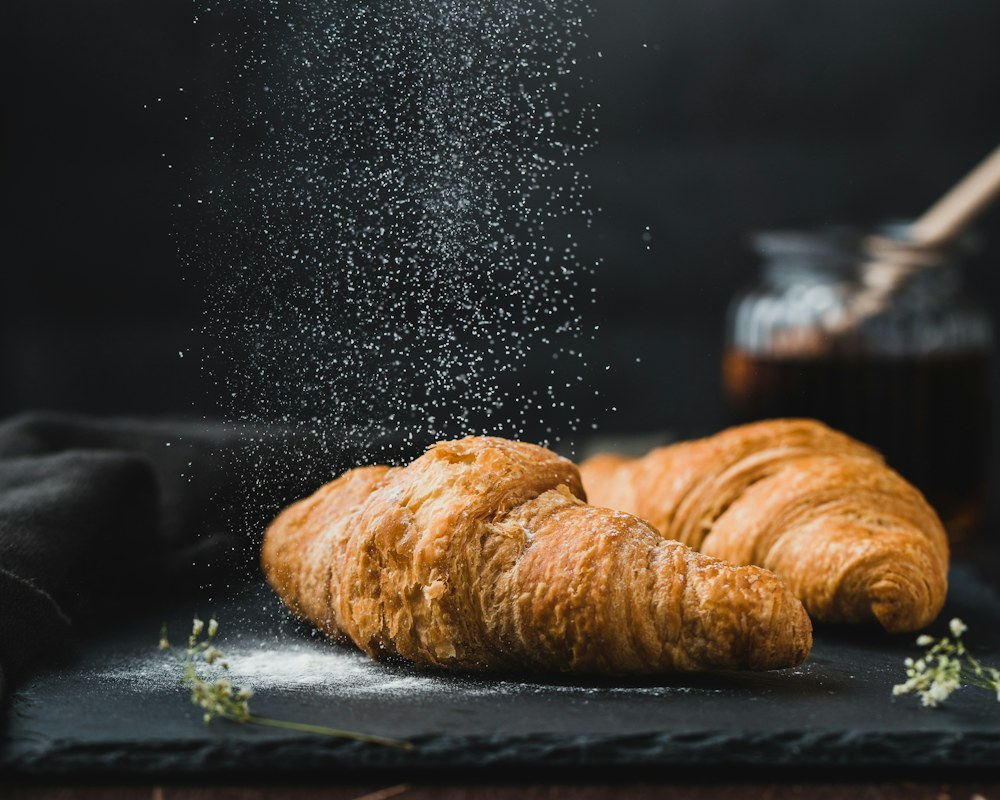

01烘焙首选
无盐黄油
UNSALTED BUTTER
奶味直接，不额外引入盐分，方便准确控制配方，是曲奇、蛋糕和酱料的通用选择。
适合 曲奇 · 蛋糕 · 黄油霜
从无盐到有盐，从烘焙到餐桌。不讲玄学，只用清晰的分类、可靠的数据和简单的方法，帮你选对、用好每一块黄油。

黄油不是“黄色的油”，而是乳脂肪经过分离、聚集形成的固态乳脂制品。它带来奶香、酥松与顺滑，也让普通食材多一层风味。
GB 19646-2025 已明确：“奶油”也可称为“黄油”，脂肪含量不小于 80.0 g/100 g；“无水奶油”脂肪含量不小于 99.8 g/100 g。
利用乳中脂肪的比重差异，将富含脂肪的部分从生乳中分离出来。
通过搅拌破坏乳脂肪球膜，使乳脂聚集，再排去酪乳等液体部分。
调整质地与水分，根据产品定位添加食盐或保留原味，最终包装成型。
发酵黄油会在搅拌前增加乳酸菌发酵步骤，因此常带有更明显的清新乳酸香。
| 产品类别 | 乳脂含量 | 是什么 | 典型用途 |
|---|---|---|---|
| 稀奶油 | 10.0% – 80.0% | 从生乳中分离出的含脂部分，液态或半液态 | 咖啡、茶饮、甜点、酱汁 |
| 调制稀奶油 | 10.0% – 80.0% | 以乳制品为主要原料，允许添加其他非乳脂原料 | 裱花、奶盖等更看重塑形的场景 |
| 奶油（黄油） | ≥ 80.0% | 本页主角：半固态乳脂制品，加盐或不加盐 | 烘焙、煎炒、涂抹 |
| 无水奶油 | ≥ 99.8% | 也称无水黄油或无水乳脂，水分极低 | 食品加工、起酥点心等特定配方 |
依据 GB 19646-2025 对术语与定义的整理；脂肪含量单位为 g/100g。
不用记复杂术语。先看是否加盐，再看是否发酵，
最后根据料理需要选择含水量与风味。
UNSALTED BUTTER
奶味直接，不额外引入盐分，方便准确控制配方，是曲奇、蛋糕和酱料的通用选择。
SALTED BUTTER
盐让奶香更鲜明，抹面包或给蔬菜、海鲜提味都方便；用于配方时别忘核算盐量。
CULTURED BUTTER
稀奶油先经乳酸菌发酵，带来更复杂的乳酸香与坚果感，适合让风味成为主角。
ANHYDROUS MILK FAT
也称无水奶油或无水乳脂，乳脂含量更高、水分很低。用途较专业，按配方替换。
选择一个用途，给你简单明确的建议。没有“最好”的黄油，只有更适合当下这一道料理的选择。
配方自由度更高，甜咸都由你掌握。优先选择配料简洁、乳脂来源明确的产品。
好用小贴士需要打发时，软化到手指能按出凹痕、但没有融化出油的状态。
找“奶油 / 黄油 / 无水奶油”等明确类别。人造奶油、涂抹脂和稀奶油不是同一种产品。
普通黄油通常以稀奶油等乳原料制成。配料长短不是唯一标准，但要能看懂主要原料。
烘焙优先无盐；控制钠摄入时，比较营养成分表中的钠含量，而非只凭“有盐”字样。
按标签要求储存，选择包装完整、无渗油、无异常酸败气味的产品，并留意保质期限。
黄油主要提供脂肪与能量，也含脂溶性维生素。它不是日常蛋白质来源，不必神化，也无需妖魔化——放入整体饮食里，适量更重要。
能量
脂肪
饱和脂肪
以上为参考估算，并非每日摄入建议。美国心脏协会建议限制饱和脂肪，并多用不饱和脂肪来源替代。
光、热、空气和异味，都会影响黄油风味。具体期限请优先遵循产品标签。
保留原包装或放入密封盒，远离冰箱内气味强的食物。开封后盖好并尽快食用。
按单次用量分切，原包装外再加铝箔或密封袋。使用前转冷藏解冻，避免反复冻融。
切薄片或小丁能缩短等待。打发用黄油应柔软但仍成型；融化与软化不能随意互换。
出现这些情况，就别只刮掉表面继续吃：明显霉斑、异常酸败或油漆味、包装破损且储存条件不明。孕期、免疫力较低等需要特别注意食品安全的人群，应更谨慎。
三张简单风味卡片，点开就看用料与做法。
从早餐开始，把奶香用得刚刚好。

早餐边缘微焦、内里柔软，用少量黄油煎出温暖奶香。

咸香蒜香、欧芹与奶香融合，是浓汤和沙拉的好搭档。

下午茶不重新做复杂开酥，用简单复烤与搭配唤醒风味。
从名称混淆到软化技巧，集中回答厨房里最常见的几个问题。
资料核对日期：2026 年 10 月 27 日
编辑说明：本页为食品知识科普，不替代医生或注册营养师的个体化建议。营养数值会因品牌与配方变化，请以实物标签为准。